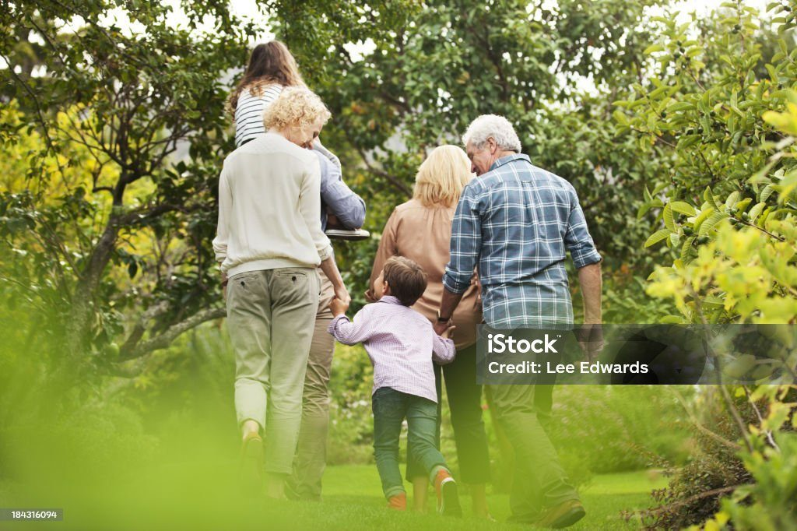

Help your clients leave a legacy for nature.
For solicitors, estate planners, financial advisers, trustee companies, funeral directors and insurers. When a client wants to leave something for nature, we make the gift simple to write and easy to administer, with one person to call at every stage.
A gift that outlasts everyone in the room.
Clients who care about nature want to know their gift will be used well and will last. We have been protecting Australia’s wild places and wildlife since 1970, and we look for outcomes that endure for generations.
Lasting outcomes
Gifts in wills have added land to national parks from Morton to the Coorong, supported wetland research, and restored reserves and walking tracks that people still enjoy today.
Wishes honoured
Clients can leave a gift for our general purposes or for a specific purpose, such as land acquisition or a particular species. We confirm specific wishes can be met before the will is finalised.
Accountable and audited
We are registered with the ACNC and endorsed as a Deductible Gift Recipient, governed by a voluntary, unremunerated board, and our financial accounts are externally audited every year.
Everything you need in one place.
Please use our full legal name and ABN. If your client wants to direct their gift to a specific purpose, contact us before the will is finalised so we can confirm the wording.
Gifts for a specific purpose
We welcome gifts for purposes such as acquiring land for national parks or protecting a particular species. Talk to us first and we will help make sure the client’s wishes can be carried out.
Land
Land can’t be left to us in a will. Clients who want to give land can do so in their lifetime, so it becomes national park. How a gift of land works.
For executors
If you are administering an estate that includes a gift to us, contact our gifts in wills team and we will confirm what we need and help the estate finalise the gift.
Clients are glad to be asked.
Many people would include a charity in their will if someone simply raised it. A short question, asked once the family is provided for, gives clients the chance to leave something for the causes they care about.

A question that works
Include a Charity, the national campaign for gifts in wills, suggests asking: “Are there any causes or charities that are particularly important to you?”
The evidence
When UK solicitors raised charitable giving, the share of wills that included a charity rose from 4.9 to 10.8 per cent, and 65 per cent of Australians say it is fine for their lawyer to ask. Source: Lawyers Weekly
Part of your network, and you part of ours.
We want to be the organisation advisers think of when a client mentions nature, wild places or wildlife, and a reliable partner when it is time to administer the gift.
Information for your clients
Our gifts in wills page sets out the ways to give, the suggested wording and who to contact, ready to share with clients. Gifts in wills
Talks for your team or members
We are glad to talk to your firm, association or network about our work, the places gifts in wills have protected, and how gifts are received and used.
One direct contact
One person to call for questions from the first draft of a will to the final distribution of an estate.
Talk to our gifts in wills team.
Whether you are drafting a will, administering an estate or would like to work with us, we would be glad to hear from you.